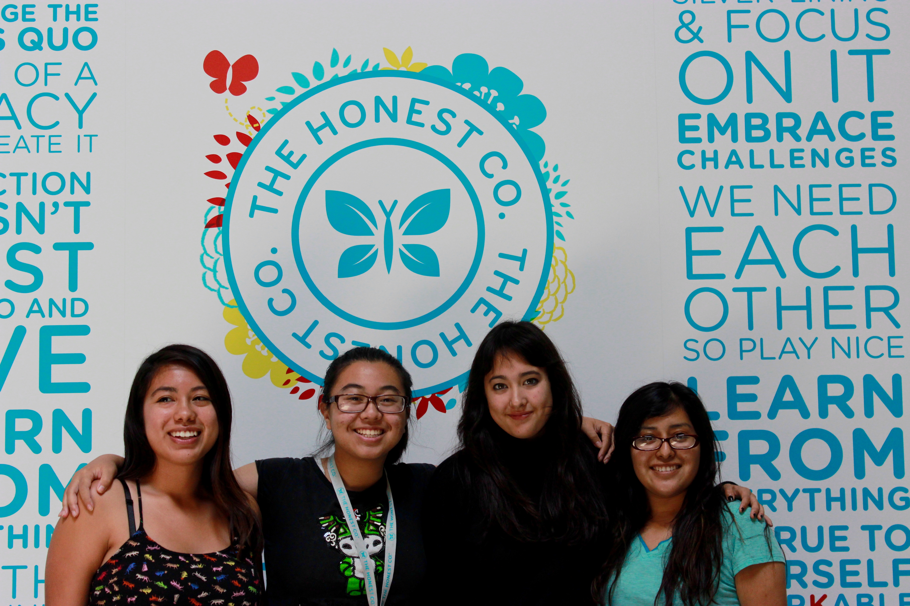

We as citizens are aware of immigration, but what do we truly know about it? What are the facts associated with it? Immigrants come from different places and are labeled by stereotypes that need to be addressed. This stigma has grown from fear of the unknown, a fear of losing jobs to 'foreigners', a fear of no control. Discrimination against immigrants breaches civil rights and makes some feel like second-class citizens. But most importantly, we want to highlight the fact America is first and foremost a nation of immigrants. Remember, the persecuted Pilgrims and the famined Irish all immigrated to America seeking certain freedoms and a new life, the same factors which impel people to come to America today.
It is important for the public to understand the diverse backgrounds of these people.
Un-bordered. strives to combat the stigma associated with immigration by exposing immigration as what it really is- a topic that is not a taboo and a necessity for many to survive. With the criticism that immigrants face both socially and politically, it is extremely difficult to gain a realistic perspective from these people. Un-bordered. will give users a realistic view on the journeys of these immigrants to bring awareness to immigration. It is more than the typical adjective of 'illegal'- it is a risk that many people take to have a better life somewhere else.
Our team is named JARA after the first initials of the team members.
Julia - rising senior with a taste for books, cosmology, and words
Alondra - rising senior passionate about learning
Rachael - rising junior possessing extraordinary artistic abilities
Alejandra - rising senior that aspires to be an engineer
All team members were part of the Girls Who Code Class of 2015. Girls Who Code is a Summer Immersion Program that strives to close the gender gap in technology by empowering young girls through programming. For more information about Girls Who Code, visit http://girlswhocode.com